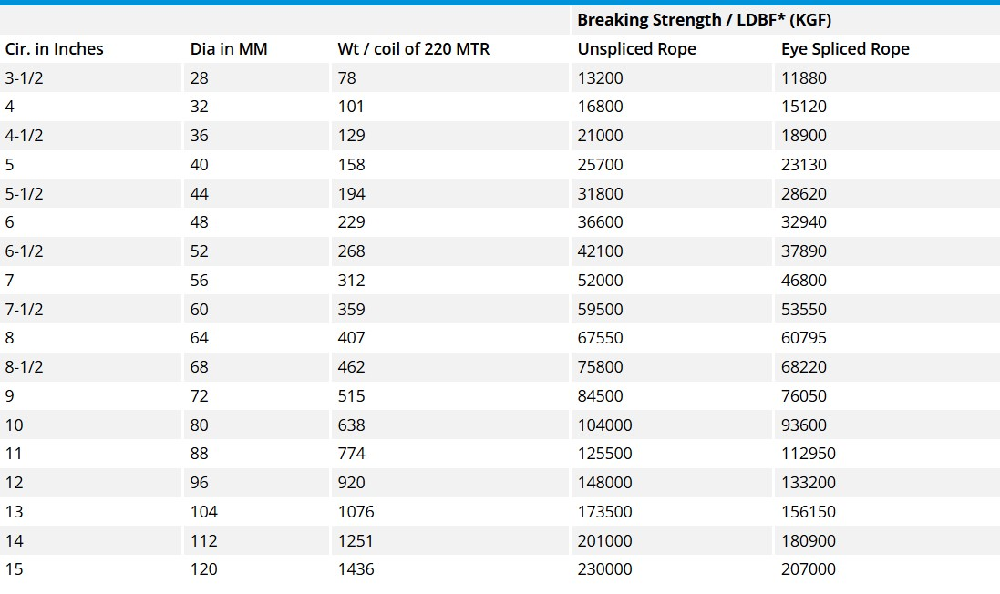
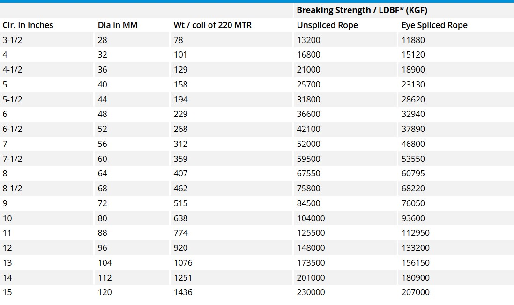

Product Overview
Mooring Ropes are engineered for marine and industrial
applications where strength, durability, and reliability
are critical. They are used for securing vessels, docks,
and heavy loads.
Manufactured from high-quality synthetic fibers, these
ropes offer excellent resistance to abrasion, moisture,
UV exposure, and harsh weather conditions.
Key Features
- High tensile strength and load-bearing capacity
- Excellent resistance to water and weather
- Durable and abrasion resistant
- Flexible and easy to handle
- Suitable for marine and industrial use
Specifications
- Material: Polypropylene / Nylon / Polyester
- Construction: Twisted or braided
- Diameter: Various sizes available
- Colour: White / Blue / Mixed
- Usage: Mooring and anchoring
Applications & Use Cases
- Marine and shipping operations
- Boat and vessel mooring
- Docks, harbors, and ports
- Industrial lifting and securing
- Fishing and offshore activities
Best Suited For
- Ports, harbors, and inland waterway operations
- Fishing boats and commercial marine vessels
- Heavy-duty anchoring and long-term outdoor use
Selection Note
For Indian coastal and inland conditions, material choice
is critical. Polypropylene ropes are preferred for floating
applications, while nylon or polyester ropes are recommended
where higher load absorption and abrasion resistance are required.
Commonly Used Along With
- Shackles and Hooks
- Anchors and Mooring Chains
- Protective Chafing Gear
Product FAQs
-
Which material is best for marine mooring in Indian conditions?
Polypropylene is preferred where floating capability is required,
while nylon or polyester is recommended for higher load absorption
and abrasion resistance in ports and harbors.
-
How do I select the correct rope diameter?
Rope diameter should be selected based on vessel size, load,
and safety margin. Larger vessels and higher loads require
thicker ropes.
-
Are mooring ropes resistant to saltwater?
Yes. Synthetic mooring ropes are designed to resist saltwater,
moisture, and marine environmental exposure.
-
Can these ropes be used for industrial lifting?
Mooring ropes can be used for securing and anchoring, but
certified lifting slings should be used for overhead lifting.
-
Do mooring ropes require regular maintenance?
Periodic inspection for abrasion, fraying, and UV damage
is recommended to ensure safety and long service life.
-
Are custom lengths available for bulk buyers?
Yes. Mooring ropes can be supplied in custom lengths and
diameters for ports, marine operators, and industrial users.
 
